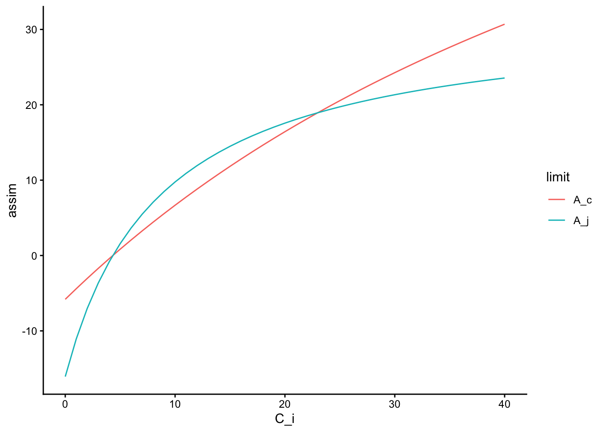
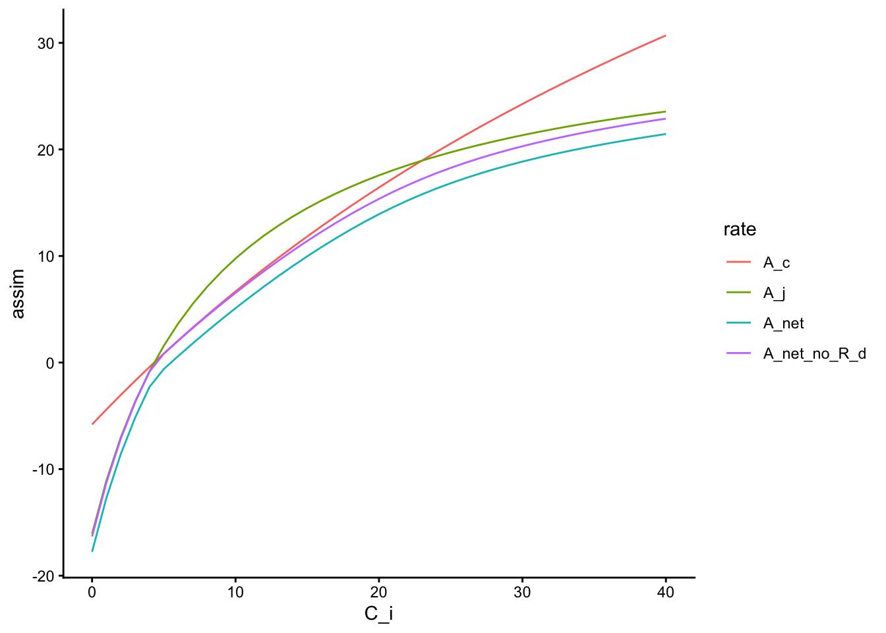
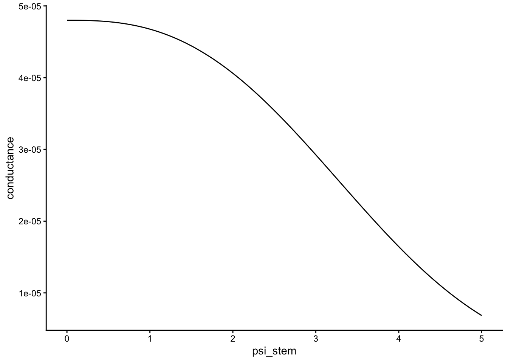
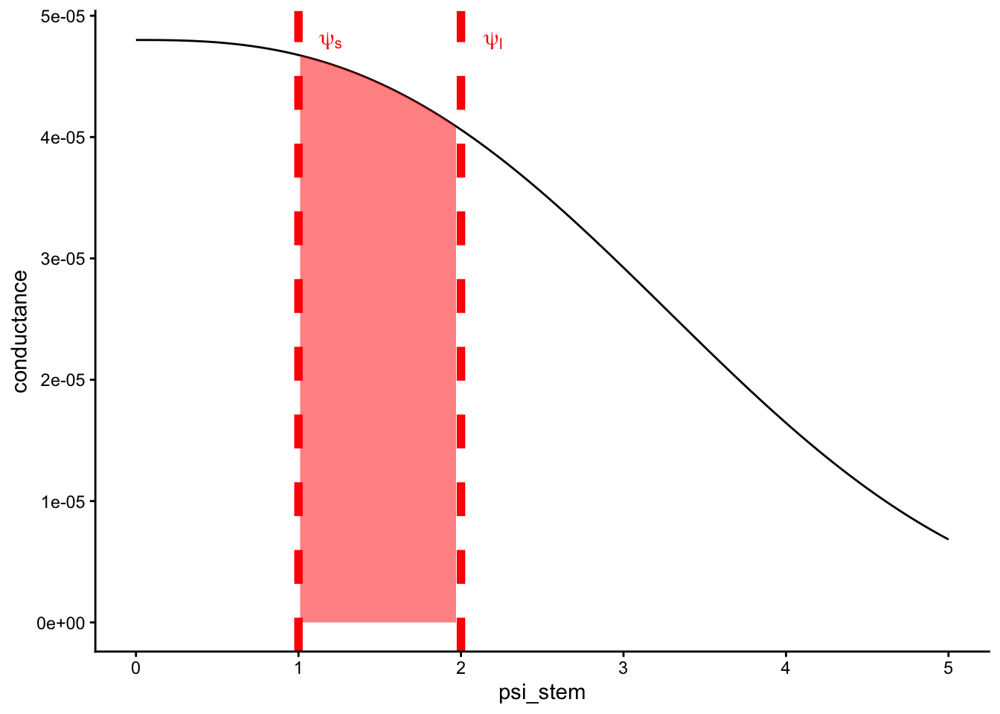
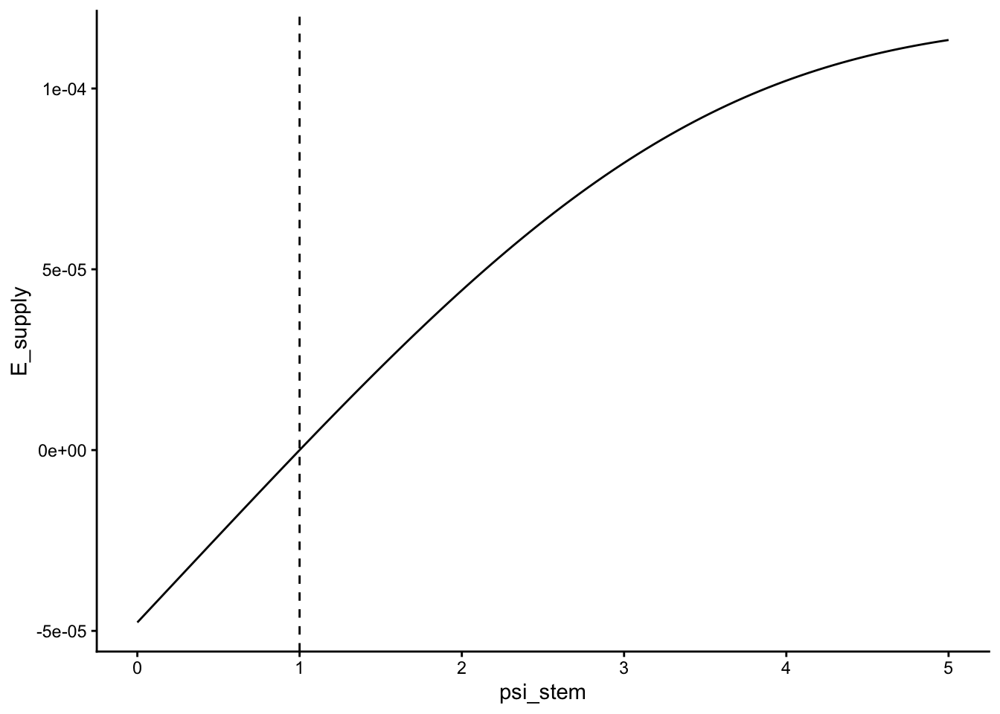
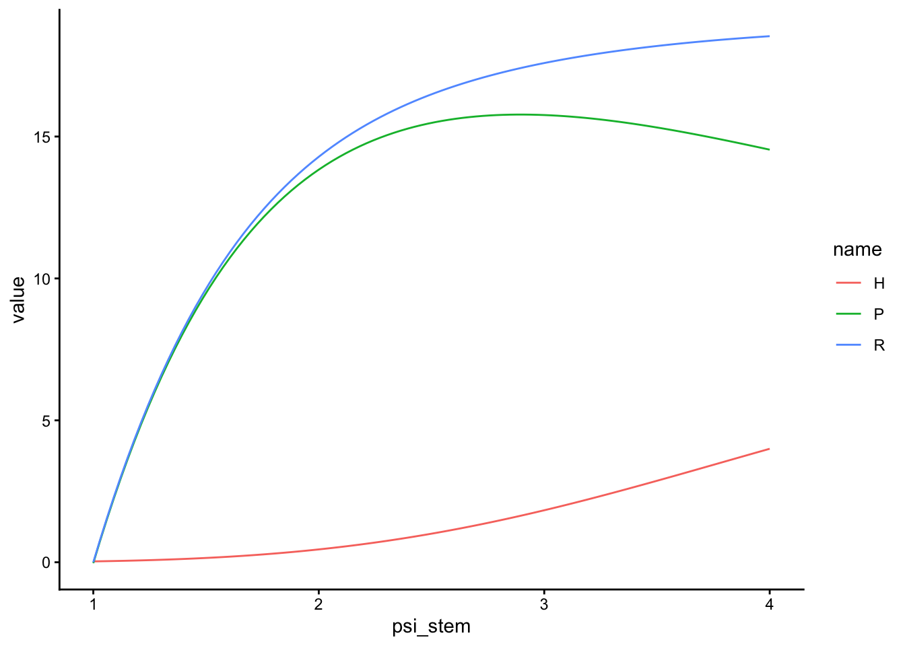

sw <- list(
vcmax_25 = 96, # umol m^-2 s^-1
stem_c = 2.680147, # unitless
stem_P50 = 3.898245 * log(2)^(1 / 2.680147), # MPa (Weibull scale 3.898245)
root_c = 2.680147, # unitless
root_P50 = 3.898245 * log(2)^(1 / 2.680147), # MPa (Weibull scale 3.898245)
TF24_beta2 = 1.5, # exponent for effect of hydraulic risk (unitless)
jmax_25 = 157.44, # maximum electron transport rate umol m^-2 s^-1
phi_J = 0.30 / 0.85, # quantum yield of electron transport per absorbed photon (mol mol^-1)
curv_fact_elec_trans = 0.7, # curvature factor for the light response curve (unitless)
curv_fact_colim = 0.99, # curvature factor for the colimited photosythnthesis equatiom
GSS_tol_abs = 1e-3, # ???
vulnerability_curve_ncontrol = 100, # ????
ci_abs_tol = 1e-3, # ???
ci_niter = 1000,
TF24_cost_scale = 7.5, # cost parameter for TF24 profit model umol m^-2 s^-1
beta_R_H = 3.4e2, #proportionality constant between minimum horizontal (intraleyer) root hydraulic resistance and C_r^-1 in [MPa * s * (mol C) / (mol H2O)]
beta_R_V = 9.4e3
)
leaf <- Leaf(
vcmax_25 = sw$vcmax_25,
stem_c = sw$stem_c,
stem_P50 = sw$stem_P50,
root_c = sw$root_c,
root_P50 = sw$root_P50,
TF24_beta2 = sw$TF24_beta2,
jmax_25 = sw$jmax_25,
phi_J = sw$phi_J,
curv_fact_elec_trans = sw$curv_fact_elec_trans,
curv_fact_colim = sw$curv_fact_colim,
GSS_tol_abs = sw$GSS_tol_abs,
vulnerability_curve_ncontrol = sw$vulnerability_curve_ncontrol,
ci_abs_tol = sw$ci_abs_tol,
ci_niter = sw$ci_niter,
TF24_cost_scale = sw$TF24_cost_scale
)Assimilation & hydraulics
theory
NotePrerequisites
This page builds on the FF16 model and The maths, gently. Read those first if the notation here is unfamiliar.
The idea first
A leaf takes in carbon dioxide through tiny pores called stomata. When the stomata open, carbon dioxide enters and water vapour escapes. The lost water must be replaced by water drawn from the soil through the plant’s hydraulic system.
This creates a trade-off. Opening the stomata further can increase photosynthesis, but it also increases transpiration and places more strain on the water-transport pathway. Closing them protects that pathway, but restricts carbon dioxide and therefore limits photosynthesis.
TF24 represents this trade-off as an optimisation problem. For each possible leaf xylem water potential, the model calculates a photosynthetic benefit and a hydraulic cost. It then chooses the water potential at which their difference, called profit, is greatest. This page develops those three pieces in order: photosynthetic revenue, hydraulic cost, and the numerical search for maximum profit.
This leaf-level carbon and water balance is central to the TF24 strategy. It determines the carbon assimilation and transpiration of a unit of leaf area under the current light, atmospheric, and soil-water conditions. The whole-plant strategy then uses those leaf-level rates in its growth and water-use calculations.
Introduction
TF24 extends the plant model with processes that link rainfall, soil water, plant hydraulics, transpiration, and carbon assimilation. This page focuses on one part of that system: the Leaf submodel that chooses a stomatal and hydraulic operating point. Its answer depends on plant traits and on the current water availability, vapour pressure deficit, and other environmental conditions. The supplied leaf temperature adjusts the photosynthetic biochemistry: plant recalculates \(V_{c,max}\), \(J_{max}\), the CO\(_2\) compensation point, Michaelis–Menten terms, and dark respiration from it.
The accompanying Soil water & root uptake page describes the other side of the coupling: how rainfall, drainage, and root uptake determine the soil-water conditions supplied to this leaf calculation.
Several parameters are especially important for the leaf calculation:
vcmax_25: the maximum rate of carboxylation at 25 °C (\(\mu mol~m^{-2}~s^{-1}\))stem_P50: the stem water potential, \(P_{50}\), at which 50% of conductivity is lost (MPa)stem_c: the shape parameter of the stem’s vulnerability curve, \(c\) (unitless)K_s: the sapwood-specific conductivity of the terminal stem segment, \(K_{\rm s}\) (\(kg~m^{-1}~s^{-1}~MPa^{-1}\))TF24_cost_scale: the carbon cost of losing all conductance, \(\gamma\) (\(\mu mol~m^{-2}~s^{-1}\))TF24_beta2: the exponent of that cost, \(\beta\) (unitless)
The scale of the vulnerability curve, \(b\) (stem_b), and the critical potential at which 95% of conductivity is lost, \(\psi_\mathrm{crit}\) (psi_crit), are derived from stem_P50 and stem_c; setting either does not change the curve. Water potentials are positive magnitudes throughout. Together with the other TF24 traits and parameters, these values determine how the Leaf submodel responds to its environment. The leaf is the phylloptim package’s: plant reaches it through leaf_model.h, which makes plant::Leaf an alias of phylloptim::Leaf. The sections below explain the calculation conceptually.
Profit maximisation
Plants vary the aperture of their stomata in response to conditions such as soil moisture and atmospheric dryness. Several theoretical frameworks can be used to represent that response. TF24 uses a profit-maximisation model, which assumes that the chosen operating point is the one that maximises profit, \(J~(\mu mol~m^{-2}~s^{-1})\).
NoteA second stomatal model lives in the code, but is dormant
The Leaf submodel also carries an implementation of the Medlyn et al. (2011) stomatal-conductance model — an empirical \(g_1\) formulation (medlyn_model_gs, with settable g0/g1 and a soil-moisture stress factor \(\beta\) derived from the wilting point and field capacity). It is not on the default TF24 compute path, which maximises profit. It exists as a comparison/exploration tool, so treat any Medlyn-style \(g_1\) behaviour as opt-in, not the model’s default stomatal response.
Profit is the difference between photosynthetic revenue, \(A~(\mu mol~m^{-2}~s^{-1})\), and hydraulic cost, \(C~(\mu mol~m^{-2}~s^{-1})\), at a candidate water potential \(\psi\):
\[ J = h(A) - C(\psi_\mathrm{leaf}, \psi_\mathrm{up}), \quad h(A) = A \text{ for a difference curve}; \qquad \psi_\mathrm{leaf} = \mathrm{clamp}_{[\psi_w,\,\psi_\mathrm{crit}]}(\psi) \ \text{(leaf route)}, \qquad \psi_r = \mathrm{clamp}_{[\psi_a,\,\psi_b]}(\psi) \ \text{(collar route)} \tag{1}\]
For TF24 the benefit link \(h\) is the identity, so profit is simply \(A - C\); phylloptim’s other cost curves use other links. The cost reads two potentials: the leaf xylem potential, \(\psi_\mathrm{leaf}\), and the potential upstream of the stem, \(\psi_\mathrm{up}\).
Later code and figures label photosynthetic revenue as \(R\) and hydraulic cost as \(H\). These are the same two quantities denoted by \(A\) and \(C\) in Equation 1; only the labels change.
\(\psi_\mathrm{leaf}~(-MPa)\) is the water potential of the canopy xylem. In this page’s notation, water stress is expressed as the magnitude of a negative potential: a larger value means a more negative physical water potential. Changing \(\psi_\mathrm{leaf}\) changes how much water the hydraulic pathway can supply and therefore the stomatal conductance that can be supported.
The search for the best operating point can run over either of two potentials, which phylloptim calls routes. On the leaf route, the candidate is the leaf potential itself, the stem draws directly on the soil (\(\psi_\mathrm{up} = \psi_\mathrm{soil}\)), and the search is held between the wet bound \(\psi_w\), where the stomata are shut, and the critical potential \(\psi_\mathrm{crit}\). On the collar route, which TF24 uses with its layered soil, the candidate is the root-collar potential \(\psi_r\), which is also the stem’s upstream potential. \(\psi_\mathrm{leaf}\) then follows from it by continuity of flow, and the search is held inside the feasible interval of collar potentials, \([\psi_a, \psi_b]\).
Both \(A\) and \(C\) are therefore functions of the candidate potential. The model evaluates their difference over the feasible range and finds the value that gives the largest \(J\).
We begin with the revenue side of the calculation.
Revenue
Revenue is the photosynthetic carbon assimilation rate \(A~(\mu mol~m^{-2}~s^{-1})\) supported at a given stomatal conductance. At this stage, it is the carbon gain before the hydraulic cost is subtracted.
Stomata connect the carbon and water calculations. Fick’s first law describes the flux of \(CO_2\) down the concentration gradient from the atmosphere, \(c_a~(Pa)\), to the intercellular spaces in the leaf, \(c_i~(Pa)\): the supply is \(g_c (c_a - c_i) / P\), where \(P~(kPa)\) is atmospheric pressure and \(g_c\) is the conductance to \(CO_2\). Assimilation also depends on \(c_i\) through leaf biochemistry, so \(c_i\) cannot be read off Fick’s law alone. The model finds the \(c_i\) at which the diffusive supply of carbon dioxide and its biochemical use agree, as the root of
\[ g(c_i) = 10^{-6}\, A(c_i) - \frac{g_c\,(c_a - c_i)}{10^{3}\, P} = 0, \qquad c_i \in [\Gamma^* c_P,\; c_a] \ \text{if } A(c_a) \ge 0, \quad c_i \in \big[c_a,\; c_a + 2|A(c_a)|\,10^{-6}\, 10^{3} P / g_c\big] \ \text{otherwise} \tag{2}\]
The factors \(10^{-6}\) and \(10^{3}\) put the assimilation, in \(\mu mol\), and the supply, with \(P\) in kPa, in the same units. The root is bracketed between the compensation point and \(c_a\) when the leaf assimilates at \(c_a\), and above \(c_a\) when the leaf is a net source of \(CO_2\), which its conductance then carries out of the leaf.
Water vapour and carbon dioxide diffuse at different rates, so the conductance to water, \(g_{s,\mathrm{H_2O}}\), is a fixed multiple of the conductance to \(CO_2\):
\[ g_{s,\mathrm{H_2O}} = 1.67\, \hat g_c \tag{3}\]
The factor 1.67 is the ratio of the diffusivities of \(H_2O\) and \(CO_2\) at the stomatal boundary (1.6 in much of the stomatal literature, and settable in the code). \(\hat g_c\) is the total conductance from leaf to air; with the leaf energy balance off, as in TF24 by default, it is \(g_c\) itself.
For any candidate potential, the hydraulic calculation supplies a transpiration rate and therefore, through Equation 9 below, a value of \(g_c\). The remaining unknown is \(c_i\), which Equation 2 settles once the biochemistry is known.
The biochemical side uses the photosynthesis model of Farquhar et al. (1980). It calculates a Rubisco-limited rate, \(W_c~(\mu mol~m^{-2}~s^{-1})\), and an electron-transport-limited rate, \(W_j~(\mu mol~m^{-2}~s^{-1})\). Net assimilation follows the more limiting process, with a smooth transition between them.
The electron-transport-limited rate depends on both light availability and \(c_i\):
\[ W_j = \frac{J}{4}\,\frac{c_i - \Gamma^* c_P}{c_i + 2\,\Gamma^* c_P}, \tag{4}\]
where \(\Gamma^*~(\mu mol~mol^{-1})\) is the \(CO_2\) compensation point and \(c_P = 10^{-3} P\) converts it to Pa. The electron transport rate \(J~(\mu mol~m^{-2}~s^{-1})\) carries the effect of irradiance into the calculation:
\[ J = \frac{I + J_{max} - \sqrt{(I + J_{max})^2 - 4\,\theta_J\, I\, J_{max}}}{2\,\theta_J}, \qquad I = \phi_J\, \alpha_\mathrm{PAR}\, Q \tag{5}\]
where \(I\) is the photon flux the leaf puts to use: the photosynthetic photon flux density (PPFD), \(Q~(\mu mol~m^{-2}~s^{-1})\), times the leaf’s absorptance, \(\alpha_\mathrm{PAR}\), and the quantum yield of electron transport, \(\phi_J~(mol~electron~mol^{-1}~photon)\). \(\theta_J\) is the unitless curvature of the light-response curve, and \(J_{max}~(\mu mol~m^{-2}~s^{-1})\) is the maximum electron transport rate.
NoteTwo different parameters use the symbol \(\theta\)
The curvature of the co-limitation below is \(\theta\) (curv_fact_colim), while the light-response curvature above is \(\theta_J\) (curv_fact_elec_trans). The Huber value in the cost section is also written \(\theta\), in plant’s notation; the two are unrelated.
The Rubisco-limited rate, and the net assimilation that combines the two rates, are
\[ W_c = \frac{V_{cmax}\,(c_i - \Gamma^* c_P)}{c_i + K_m}, \qquad W_j = \frac{J}{4}\,\frac{c_i - \Gamma^* c_P}{c_i + 2\,\Gamma^* c_P}, \qquad A = \frac{W_c + W_j - \sqrt{(W_c + W_j)^2 - 4\,\theta\, W_c W_j}}{2\,\theta} - R_d \tag{6}\]
where \(V_{cmax}~(\mu mol~m^{-2}~s^{-1})\) is the maximum rate of carboxylation, \(K_m~(Pa)\) is the effective Michaelis–Menten constant, and \(W_j\) is Equation 4. Net assimilation \(A\) is the smaller root of a quadratic in the two rates, with curvature \(\theta\), less dark respiration, \(R_d\). \(V_{cmax}\), \(J_{max}\), \(\Gamma^*\), \(K_m\) and \(R_d\) are all temperature-dependent.
The next example compares the two rates, labelled A_c and A_j in the code, across a range of \(c_i\) values.
The calculation needs both fixed strategy parameters and environmental or plant-state values that can change through time. We first create a Leaf object to hold the fixed parameters. Unlike an Individual or a patch, this object represents the physiology of a unit of leaf area rather than a whole plant or population.
The following executable example uses plant’s Leaf() interface, whose arguments carry the names phylloptim gives them. Each vulnerability curve is given by its P50 and shape, and the root resistances are not Leaf() arguments: they reach the leaf with the conditions below.
Next, set_physiology supplies the conditions at one point in time. These include the light and atmospheric environment, soil water, and size-dependent properties of the plant. Unlike the fixed parameters passed to Leaf(), these values can change as an individual grows and its environment changes. Here they are held constant so that the leaf-level relationships can be viewed in isolation.
psi_soil = c(1)
soil_depth = c(0.5)
mass_root_prop_ = c(1)
area_leaf_ = 0.05
PPFD = 1000
leaf_specific_conductance_max = 4.8e-05
atm_vpd = 2
ca = 40
leaf_temp_ = 25
atm_o2_kpa_ = 21
atm_kpa_ = 101.3
root_network <- phylloptim::root_network_from_carbon(
mass_root_prop_ / area_leaf_, soil_depth = soil_depth,
beta_R_H = sw$beta_R_H, beta_R_V = sw$beta_R_V)
leaf$set_physiology(root_network = root_network, PPFD = PPFD, psi_soil = psi_soil, soil_depth = soil_depth, leaf_specific_conductance_max = leaf_specific_conductance_max, atm_vpd = atm_vpd, ca = ca, leaf_temp = leaf_temp_, atm_o2_kpa = atm_o2_kpa_, atm_kpa = atm_kpa_)We now evaluate the biochemical rates over a sequence of \(c_i\) values.
C_i = seq(0,40,1)The Leaf object uses similar names for calculation methods and stored results. For example, leaf$assim_electron_limited is a function that takes \(c_i\) as an input, whereas leaf$assim_electron_limited_ stores a calculated result. The first plot calls the functions directly.
tibble(C_i = C_i) %>%
mutate(A_j = map_dbl(C_i, leaf$assim_electron_limited),
A_c = map_dbl(C_i, leaf$assim_rubisco_limited)) %>%
pivot_longer(cols = c(A_j, A_c), names_to = "limit", values_to = "assim") %>%
ggplot(aes(x = C_i, y = assim))+
geom_line(aes(colour = limit, group = limit)) +
theme_classic()
Both potential rates increase with \(c_i\), but they do not increase at the same rate. Which process is most limiting can therefore change across the range of \(c_i\). The model combines them with the smooth co-limitation in Equation 6.
tibble(C_i = C_i) %>%
mutate(A_j = map_dbl(C_i, leaf$assim_electron_limited),
A_c = map_dbl(C_i, leaf$assim_rubisco_limited)) %>%
mutate(A_net = map_dbl(C_i, leaf$assim_colimited)) %>%
mutate(A_net_no_R_d = A_net + leaf$R_d_) %>%
pivot_longer(cols = c(A_j, A_c,A_net, A_net_no_R_d), names_to = "rate", values_to = "assim") %>%
ggplot(aes(x = C_i, y = assim))+
geom_line(aes(colour = rate, group = rate)) +
theme_classic()
The A_net calculation also subtracts dark respiration. Adding that respiration term back helps show how the co-limited curve relates to \(A_c\) and \(A_j\) before the respiratory deduction.
Cost
Photosynthesis requires a continuous supply of water from the soil to the canopy. Water moves along a potential gradient, so the leaf xylem must be at a more negative physical water potential than the soil. In the positive-magnitude notation used here, this means that \(\psi_\mathrm{leaf}\) must be larger than the potential upstream of it.
Making that gradient steeper can supply more water, but it also reduces the conductance of the xylem pathway as embolism risk increases. The fraction of the stem’s maximum conductance that remains at a potential \(\psi\) follows a Weibull vulnerability curve:
\[ f(\psi) = \exp\!\big[-(\psi/b)^{c}\big] = 2^{-(\psi/P_{50})^{c}} \tag{7}\]
The stem’s conductance at \(\psi\) is therefore \(k_{max} f(\psi)\). The example below plots this decline using the parameter values defined above.
data <-
tibble(psi_stem = seq(0, 5, length.out = 100)) %>%
mutate(
proportion_conductance = map_dbl(psi_stem, leaf$proportion_of_conductivity),
conductance = 4.8e-05*proportion_conductance
)
data %>%
ggplot(aes(x = psi_stem, y = conductance)) +
geom_line() +
theme_classic()
\(b~(MPa)\) controls the sensitivity of the curve and \(c\) controls its shape. The code takes the pair \((P_{50}, c)\) and derives \(b\) from it, for the stem and, with the roots’ own pair, for the roots:
\[ b = \frac{P_{50}}{(\ln 2)^{1/c}}, \qquad b_r = \frac{P_{50,r}}{(\ln 2)^{1/c_r}} \]
where \(P_{50}\) is the potential at which 50% of hydraulic conductance is lost. \(P_{50}\) and \(c\) are traits of the strategy. A trade-off function can set them from other traits: the fieldtrial package supplies the recommended trade-offs, and plant applies none unless they are attached. Those trade-offs tie both to the sapwood conductivity, so that more conductive stems lose conductivity at a less negative water potential: \(P_{50} = 10^{B_{Hv1} + B_{Hv2} \log_{10} K_{\rm s}}\) and \(c = B_{c1} e^{-B_{c2} P_{50}}\). At its defaults \(B_{c2} = 0\), so \(c\) does not vary with \(P_{50}\).
\(k_{max}\) is the stem’s maximum conductance per unit leaf area, at \(\psi = 0\). plant computes it and hands it to the leaf:
\[ k_{\max} = \frac{K_{\rm s} \, \theta \, e^{\delta_{\rm s}}}{L_{\rm eff}} \]
Here, \(K_{\rm s}\) is the sapwood-specific conductivity of the terminal segment, \(\theta~(m^2~sapwood~m^{-2}~leaf~area)\) is the Huber value, and \(e^{\delta_{\rm s}}\) scales it to the Huber value the plant carries, which departs from \(\theta\) when its canopy has thinned. \(L_{\rm eff}\) is the stem’s effective hydraulic path length. It runs from the stem base to the mean height of leaf area, \(\eta_c H\), where \(H\) is plant height and \(\eta_c~(unitless)[0,1]\) describes the average relative position of leaves within the canopy. Because conduits widen towards the base, \(L_{\rm eff}\) is much shorter than \(\eta_c H\) in a tall plant; it equals \(\eta_c H\) only with no widening and no terminal segment. The TF24 strategy provides more context for these quantities. \(K_{\rm s}\), \(\theta\), and \(c\) parameterise the hydraulic relationships, while the TF24 hyper-parameterisation handles the remaining parameter links. Plant height is a dynamic state, so \(k_{max}\) can change as the plant grows.
For a given upstream potential and candidate leaf water potential, the water that the stem can supply per unit leaf area is the integral of conductance across that potential interval:
\[ E(\psi_\mathrm{leaf}; \psi_\mathrm{up}) = k_{max}\big[\tilde F(\psi_\mathrm{leaf}) - \tilde F(\psi_\mathrm{up})\big] \;\approx\; k_{max}\!\int_{\psi_\mathrm{up}}^{\psi_\mathrm{leaf}} f(u)\,du, \qquad E = k_{max}\big[\tilde Q(\psi_\mathrm{up}) - \tilde Q(\psi_\mathrm{leaf})\big],\ \tilde Q = F(\infty) - \tilde F \ \text{ where } \psi_\mathrm{up} \text{ is in the tail} \tag{8}\]
The code evaluates the integral through \(\tilde F\), a tabulated cumulative integral of the vulnerability curve. Where the upstream potential is far out in the curve’s tail, it takes the difference of the area still left, \(\tilde Q\), which keeps digits a plain difference would lose. Graphically, \(E\) is the area under the conductance curve between the upstream potential, \(\psi_\mathrm{up}~(-MPa)\), and the leaf xylem water potential, \(\psi_\mathrm{leaf}~(-MPa)\). On the leaf route, \(\psi_\mathrm{up}\) is the soil water potential; on TF24’s collar route, it is the root-collar potential, which the soil water page connects to the soil layers.
data %>%
ggplot(aes(x = psi_stem, y = conductance)) +
geom_line() +
theme_classic() +
geom_area(aes(ifelse(psi_stem > 2 | psi_stem < 1, NA, psi_stem), conductance), fill = "red", alpha= 0.5) +
geom_vline(xintercept = 2, col = "red", linewidth = 2, linetype = "dashed") +
geom_vline(xintercept = 1, col = "red", linewidth = 2, linetype = "dashed") +
annotate("text", x = 1.2, y = 4.8e-05, label = expression(psi[s]), col = "red") +
annotate("text", x = 2.2, y = 4.8e-05, label = expression(psi[l]), col = "red")
Holding the upstream potential fixed, the next plot shows how \(E\) changes as \(\psi_\mathrm{leaf}\) becomes more negative. Supply initially rises as the potential gradient increases, but the rise tapers because conductance is simultaneously being lost along the vulnerability curve. Increasing hydraulic strain therefore produces progressively smaller gains in water supply.
data %>%
mutate(E_supply = map2_dbl(psi_stem, psi_soil, leaf$transpiration_full_integration)) %>%
ggplot(aes(x = psi_stem, y = E_supply)) +
geom_vline(xintercept = psi_soil, linetype = "dashed") +
geom_line() +
theme_classic()
The critical potential, \(\psi_\mathrm{crit}\), is the \(\psi_\mathrm{leaf}\) at which 95% of conductance has been lost. It ends the search on the leaf route. On the collar route, TF24’s search may run past it, to the end of the stem’s vulnerability curve.
The revenue calculation requires stomatal conductance, while the hydraulic calculation gives water supply. The two are joined by requiring water supplied through the plant to equal water lost from the leaf:
\[E_{supply} = E_{demand}\]
Atmospheric demand follows Fick’s law for water vapour: transpiration is the conductance to water times the vapour pressure deficit, over atmospheric pressure. The code uses the law the other way round. Given the supply \(E\) at a candidate potential, it reads off the conductance to \(CO_2\) that would carry it:
\[ g_c = \frac{P\, (E - r^*) / M_w}{D_\mathrm{leaf}\; \times 1.67} + \rho\, g_\min(T_\mathrm{leaf}) \tag{9}\]
Here \(E\) is in kg m\(^{-2}\) s\(^{-1}\) and \(M_w\) converts it to moles, \(D_\mathrm{leaf}~(kPa)\) is the vapour pressure deficit at the leaf, and 1.67 is the diffusivity ratio of Equation 3. With the leaf energy balance off, as in TF24 by default, the leaf is at air temperature and \(D_\mathrm{leaf}\) is the atmospheric deficit. The terms in \(r^*\) and \(g_\min\) belong to the residual (cuticular) conductance: \(r^*\) is the water the cuticle loses, which passes through no stomata, and \(\rho\,g_\min\) is the cuticle’s own conductance to \(CO_2\). TF24’s default \(g_\min\) is zero, which removes both.
For a fixed deficit, a larger conductance needs a larger \(E\). Supplying it requires a more negative leaf water potential, which causes further loss of hydraulic conductance. This closes the central loop: opening stomata can raise carbon assimilation, but doing so also raises water demand and hydraulic risk.
To compare that risk directly with carbon revenue, the model expresses hydraulic cost in the same units as assimilation:
\[ C_\mathrm{TF24}(\psi) = \gamma\,\big[1 - f(\psi)\big]^{\beta}, \qquad f(\psi) = \exp\!\big[-(\psi/b)^{c}\big] \tag{10}\]
Here, \(\gamma~(\mu mol~m^{-2}~s^{-1})\) is the carbon cost of losing all conductance, per unit leaf area whatever the plant’s size, and \(\beta~(unitless)\) controls the shape of the cost curve. The term in brackets is the proportion of conductivity lost at \(\psi\), so the cost is zero when \(\psi = 0\) and increases as conductivity is lost. TF24 seats phylloptim’s TF24_floor cost curve, which adds a price on water, \(\lambda_o E\), to this cost; at TF24’s default \(\lambda_o = 0\) it is this cost exactly. Only the hydraulic cost is carbon the plant spends: growth is billed the assimilation less this cost, and the price changes only the aperture chosen.
Profit
We can now put the two sides together. For each candidate potential, the model calculates photosynthetic revenue and hydraulic cost, then subtracts the second from the first. Revenue tends to benefit from the additional stomatal opening supported by a steeper water-potential gradient, while hydraulic cost rises as conductivity is lost. Their difference therefore has a maximum within the feasible range.
The first example calculates the revenue, cost, and profit curves step by step.
f <- function(psi_stem) {
leaf$set_leaf_states_rates_from_psi_stem(psi_stem, psi_soil)
R = leaf$assim_colimited_
H = leaf$hydraulic_cost_TF(psi_stem)
P = R-H
tibble(R, H, P)
}
data <-
tibble(psi_stem = seq(1, 4, length.out = 100)) %>%
mutate(outcomes = map(psi_stem, f)) %>%
unnest(outcomes)
data %>%
pivot_longer(cols = c(P, R, H)) %>%
ggplot(aes(x = psi_stem, y = value)) +
geom_line(aes(colour = name, group = name)) +
theme_classic() +
geom_vline(xintercept = 2.05, linetype = "dashed")The explicit calculation is useful for seeing where the three curves come from. In normal use, TF24 performs the same sequence through its built-in profit_psi_stem_TF function.
f <- function(psi_stem){
leaf$profit_psi_stem_TF(psi_stem, psi_soil)
tibble(H = leaf$hydraulic_cost_, R = leaf$assim_colimited_, P = R-H)
}
data <-
tibble(psi_stem = seq(1, 4, length.out = 100)) %>%
mutate(outcomes = map(psi_stem, f))%>%
unnest(outcomes)
data %>%
pivot_longer(cols = c(H,R,P)) %>%
ggplot(aes(x = psi_stem, y = value)) +
geom_line(aes(colour = name, group = name)) +
theme_classic()
Optimising profit
The leaf submodel ultimately needs two outputs under the current environmental conditions and plant state: carbon assimilation and water use per unit leaf area. Obtaining them requires finding the potential that maximises \(J\) in Equation 1. Once that operating point is known, the corresponding transpiration \(E\) can also be passed to the soil-water calculation.
TF24 uses a golden-section search. The search starts with a lower and upper bound and repeatedly narrows the interval containing the maximum until that interval is smaller than a chosen tolerance. Here, the quantity being varied is \(\psi_\mathrm{leaf}\), on the leaf route. Its bounds are \(\psi_\mathrm{soil}\) and \(\psi_\mathrm{crit}\): the leaf cannot be less negative than the soil that supplies it, and it is not allowed to pass the critical loss-of-conductivity threshold.
The following code first demonstrates the search manually. It evaluates profit at two interior points, discards the part of the interval that cannot contain the maximum, and repeats.
#golden ratio
gr = (sqrt(5) + 1) / 2;
bound_a = NA
bound_b = NA
bound_c = NA
bound_d = NA
#set lower boundary to psi_soil
bound_a = leaf$psi_soil_;
#set upper boundary to psi_crit
bound_b = leaf$psi_crit;
#tolerance value
delta_crit = 0.01;
bound_c = bound_b - (bound_b - bound_a) / gr;
bound_d = bound_a + (bound_b - bound_a) / gr;
while (abs(bound_b - bound_a) > delta_crit) {
profit_at_c = leaf$profit_psi_stem_TF(bound_c, psi_soil);
profit_at_d = leaf$profit_psi_stem_TF(bound_d, psi_soil);
if (profit_at_c > profit_at_d) {
bound_b = bound_d;
} else {
bound_a = bound_c;
}
bound_c = bound_b - (bound_b - bound_a) / gr;
bound_d = bound_a + (bound_b - bound_a) / gr;
}
(opt_psi_leaf = ((bound_b + bound_a) / 2))[1] 2.895207(profit = leaf$profit_psi_stem_TF(opt_psi_leaf, psi_soil))[1] 15.77428(transpiration = leaf$transpiration_)[1] 7.629591e-05Validation against the compiled implementation
The final chunk calls the corresponding built-in TF24 Leaf optimisation. Its purpose is to check that the compiled implementation returns the same optimum, profit, and transpiration as the manual search.
leaf$set_model("TF24", "leaf")
leaf$optimise()
leaf$profit_[1] 15.77428leaf$transpiration_[1] 7.626747e-05The complete calculation can therefore be read as a short sequence:
- choose a candidate leaf xylem water potential \(\psi_\mathrm{leaf}\);
- calculate the water supply and the stomatal conductance it can support;
- solve for \(c_i\) and calculate photosynthetic assimilation;
- calculate the hydraulic cost associated with lost conductivity;
- subtract cost from assimilation and search for the \(\psi_\mathrm{leaf}\) with the highest profit.
TF24 repeats this calculation as plant size and environmental conditions change. The resulting assimilation contributes to the whole-plant carbon balance, while transpiration feeds back on the soil-water state described in Soil water & root uptake.